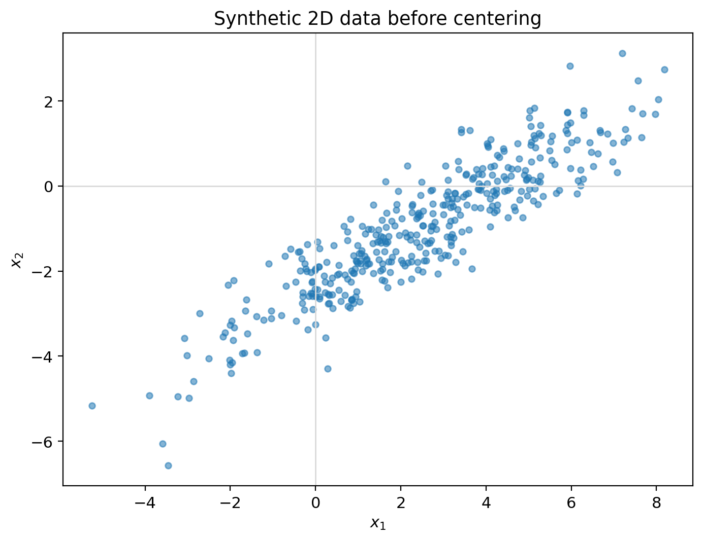
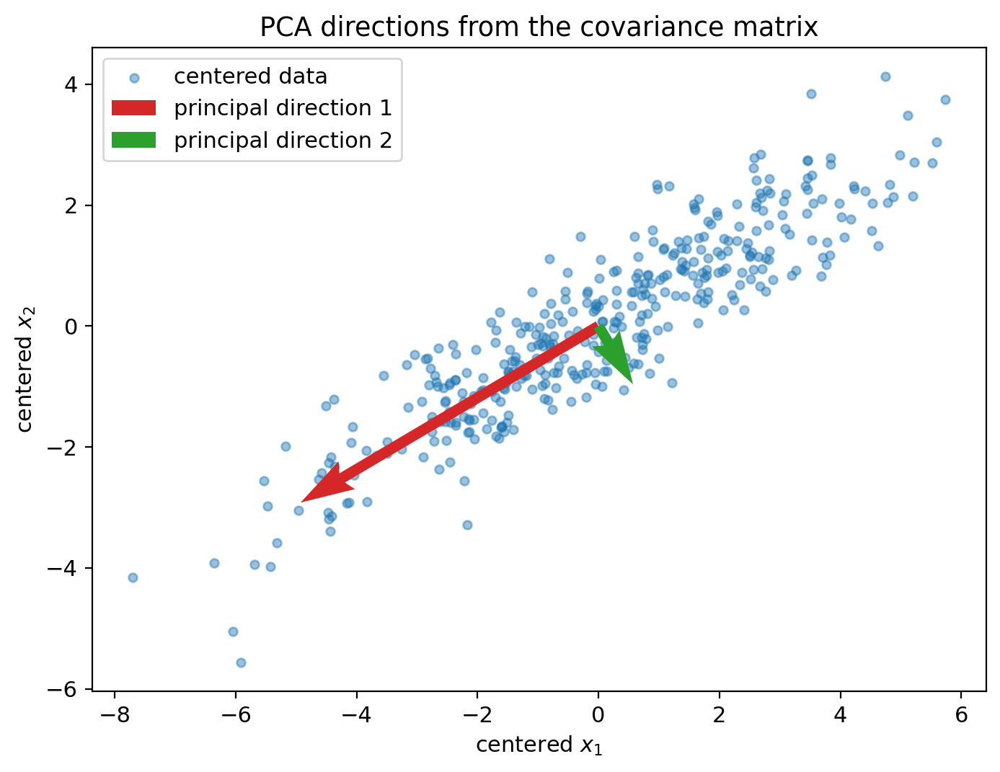
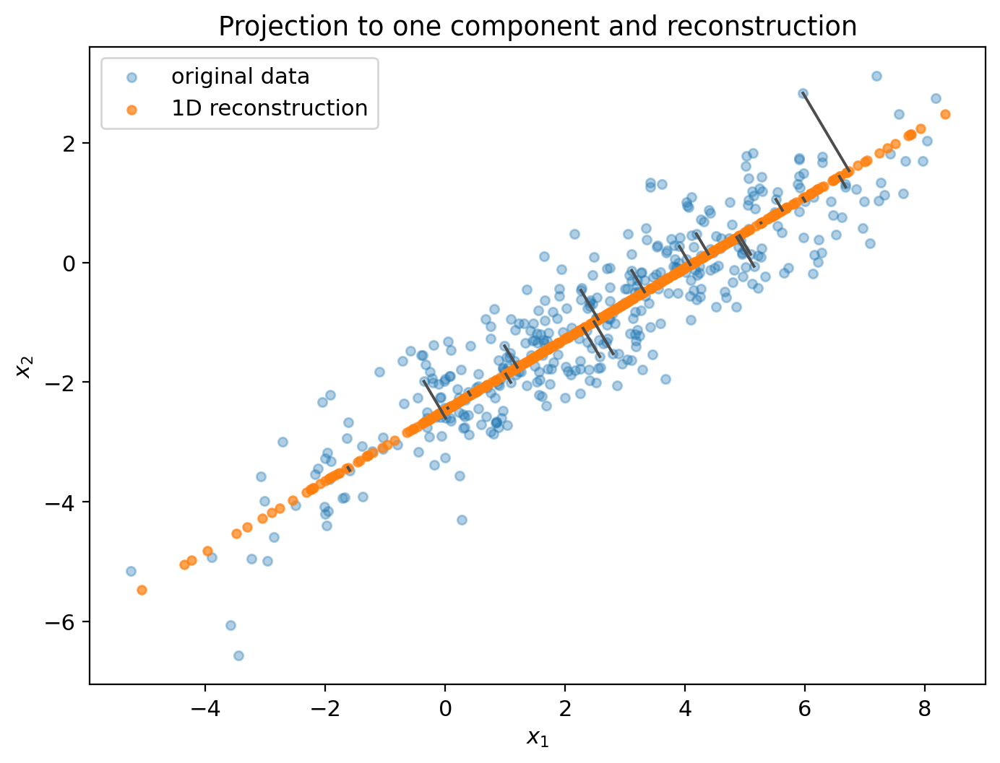
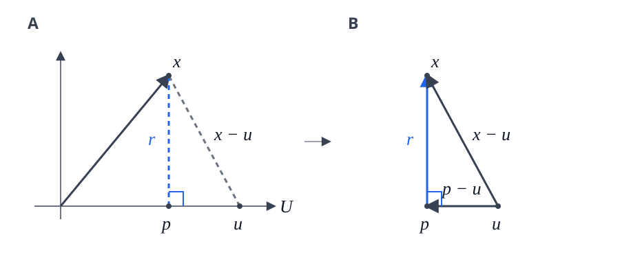

Research Log
In Search of PCA’s Lost Variance
The Question
In PCA, we compress our data by finding their principal components and then selecting the first \(k\) components with the largest eigenvalues. By doing this, we discard some principal components associated with lower eigenvalues. What do these discarded eigenvectors and their corresponding eigenvalues have to do with the reconstruction mean-squared error?
Short answer: in the setting of this post, the reconstruction MSE equals, in fact, the sum of the discarded eigenvalues.
By MSE, I mean the average squared distance between each sample \(x_i\) and its reconstruction \(\widehat{x}_i\):
Here, \(n\) is the number of samples: we add the squared errors across coordinates, then average over samples. I’ll also use \(1/n\) to normalize the covariance matrix.
Note: I encourage the reader to check this notebook as a companion to this blog post.
Why I Care
Compressing data is a common theme in AI/ML. For example, some approaches to diffusion models work in the latent space to reduce computation. But compression comes with its own challenges, one of them being aware of what we are losing with these smaller representations (as a side note, I highly recommend the 3Blue1Brown series “Compression is intelligence”).
Today, I’d like to explore what’s gone after we reduce our data dimensions using PCA. In doing that, I hope we can get a nice geometric intuition for some topics related to probability—mean, variance—linear algebra—projections, eigendecomposition—and machine learning, namely PCA.
Setup and Definitions
Covering PCA in detail is out of the scope of this post. Instead, I’ll use a motivating example that sheds light on the question at hand.
Let’s start with these data in 2D.

In PCA, we start by centering the data, such that the empirical mean becomes zero. Writing the centered points as \(\tilde{x}_i=x_i-\bar{x}\),
This will pay off later in our “Derivation” section.
PCA describes the variation around the empirical mean, which we ensured equals zero in our previous step. To achieve this, PCA applies eigendecomposition to the covariance matrix \(S\):
where \(X_c\) has the centered data points as its rows.
We can visualize the previous steps in the following image.

For our example, we have the following two principal directions, each with length one.
First principal direction:
Second principal direction:
Now, we select the first principal direction and project the data there. We keep one coordinate, \(z_i\), and use it to recover the projected point \(p_i\):
Here, \(z_i\) is the one-dimensional representation. The point \(p_i\) lies on our principal direction in 2D.
This projection creates a residual \(r_i\) (the difference between the centered sample and its projection) that is perpendicular, also known as orthogonal, to the principal direction. This orthogonality is important because it guarantees we are projecting to the closest point (we’ll see why).
Finally, we add back the original mean:
Our reconstruction looks like this.

So, when we subtract the reconstruction, the mean cancels:
With this setup, if we now take all the residuals, square their lengths, and compute their average, we’ll get—you guessed it—about \(0.314\)! Exactly the eigenvalue (variance of the discarded second principal component). As you might imagine, there’s an explanation for this match.
Minimal Derivation
In the previous section, I claimed that orthogonality gives us the closest projection. Let’s see why.

Our goal is to find a point in \(U\) with the closest distance to \(x\). The residual in the image, where it is orthogonal to \(U\), is given by
So \(x=r+p\). There could be other points in the subspace \(U\), like the point \(u\) in image A. Let’s use this \(u\) as a variable and subtract it from both sides.
Notice that \(p\) and \(u\) are in \(U\). Since \(U\) is a subspace (closed under addition and scalar multiplication), \(p-u\) is guaranteed to be in \(U\). Also, since \(r\) is perpendicular to \(U\), it follows that \(r\) and \(p-u\) must be orthogonal. Based on this, we can see our last equation in terms of image B, where \(x-u\) is the hypotenuse and \(r\), \(p-u\) are the legs of a right triangle. Using Pythagoras,
The last term can only be zero or positive, and it becomes zero when \(u=p\). So the squared distance is minimized at \(p\).
Intuitively, any other point in \(U\) will have a longer residual, as it requires moving sideways in \(U\).
Showing why the orthogonal projection is closest might have seemed like a detour. But now we can use that same orthogonality to answer the question of this blog post. Indeed, we can see the decomposition of every centered point as
And since \(p_i\in U\) and \(r_i\perp U\), we have \(p_i\perp r_i\). So we can use Pythagoras directly:
If we now average over all our points (sum and divide by \(n\) on both sides),
We can literally interpret those terms as:
Why? Remember that we said centering our data would pay off in this section.
The total variance of our vector-valued data is defined as
But since the centered data have mean zero,
And \(p_i\), \(r_i\) are also centered.
For the projection, with \(P\) the orthogonal projection matrix:
since \(P\) is the same matrix.
But \(\frac{1}{n}\sum_{i=1}^{n}\tilde{x}_i=0\), so
For the residual,
So
Therefore,
And we know that PCA directions are eigenvectors of the covariance matrix. But how do their eigenvalues enter this picture?
Let \(v_j\) be one of these directions, with length one. The coordinate of a centered point along this direction is \(v_j^{\mathsf T}\tilde{x}_i\). Since the data are centered, the variance of these coordinates is
Remember, \(v_j^{\mathsf T}\tilde{x}_i\) is a scalar, so
Then, since \(v_j\) is the same direction for every point, we can take it outside the sum:
The sum in parentheses is our covariance matrix \(S=\frac{1}{n}X_c^{\mathsf T}X_c\).
Finally, remember that \(Sv_j=\lambda_jv_j\) and \(v_j^{\mathsf T}v_j=1\). Therefore,
So each eigenvalue measures the variance along its principal direction.
In our 2D example, the two orthogonal principal directions cover the whole space, so
Keeping the first component retains variance \(\lambda_1\). The rest is the squared residual error we have been averaging. So our variance split becomes
Therefore,
And in general, with this setup, our \(d\) principal directions form an orthonormal basis. If we keep the first \(k\), the residual contains the components we discarded:
Since these directions are orthonormal, the cross terms vanish when we square the length:
Then we average over our points:
Therefore,
the sum of the eigenvalues of the discarded components.
Visualizing the Lost Variance
We saw how the discarded variance becomes reconstruction error. Let’s now rotate the line we project onto and see how much we lose.
What I Think I Learned
Compression is not a free lunch. We must be aware of what we are sacrificing when doing it. In this post, we focused our attention on PCA and found that the variance we lost was equal to the reconstruction MSE.
It was pleasing to see how orthogonality provides us with the closest projection, and how squared lengths become variance (after centering and averaging).
And at the end, we found our lost variance sitting right there in the discarded eigenvalues, in the MSE, in the average squared length of our residuals—always in front of us.
Open Questions
- What do we lose in a nonlinear setting, like a VAE?
- Besides variance, what other features are important to retain in a compression?